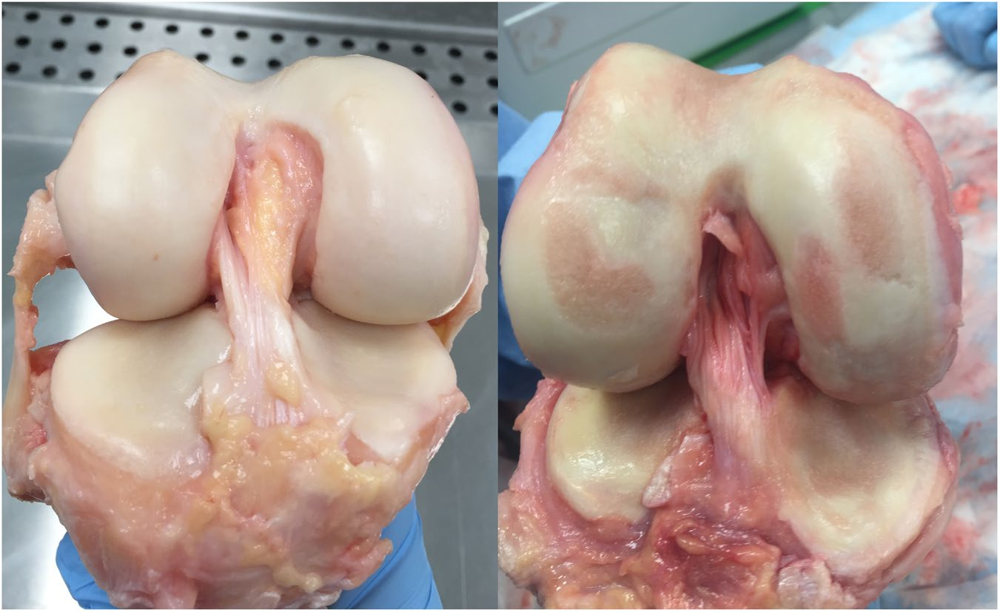

Independent observed specimens · articular appearance
Prepared human knee surfaces
Two cadaveric examples show the study’s healthy and osteoarthritic classifications. They are different donors, not a time sequence of one joint. The photographs show prepared tissue appearance; they do not measure joint pressure, motion or the thickness of a fluid film.

Image left · 43 years. Source-captioned healthy specimen. The pale, smooth articulating surfaces are cartilage-covered; they are not a color calibration of bare cortical bone.
Image right · 88 years. Source-captioned osteoarthritic specimen. This single comparison does not isolate age from disease, nor establish a diagnostic appearance for every knee.
Focus the image region to pan with arrows, Home/End or Page Up/Down. The source pair is complete; no new anatomical leader, camera axis or metric scale is added.
Preparation and reading context. The study used fresh-frozen human knees, with one freeze–thaw cycle before dissection. Joints were photographed and blind graded by two observers on three occasions. The study’s tissue sampling sites include femoral condyles and tibial plateaus; this overview is not an exact sampling map. Specific photographed body side, sex and camera-to-body orientation are not newly inferred.
The two observations are independent of the Open Knee(s) oks003 geometry, its MRI and saved model poses. No photograph-to-mesh registration or texture projection is claimed. The source labels remain study-specific; neither photograph certifies intact living function.
Peters AE, Akhtar R, Comerford EJ & Bates KT (2018), The effect of ageing and osteoarthritis on the mechanical properties of cartilage and bone in the human knee joint, Figure 6, CC BY 4.0, ©2018authors. Complete unchanged 1351×827 JPEG from the published PDF, page9xref250; extracted bytes exactly match the original PDF JPEG stream. No crop, recolor or resampling. Printed 160 mm, about214ppi; no new scale bar. Specimens, rights and exact source identity · Public reproduction and hashes.